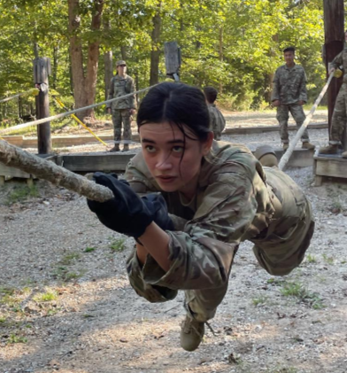
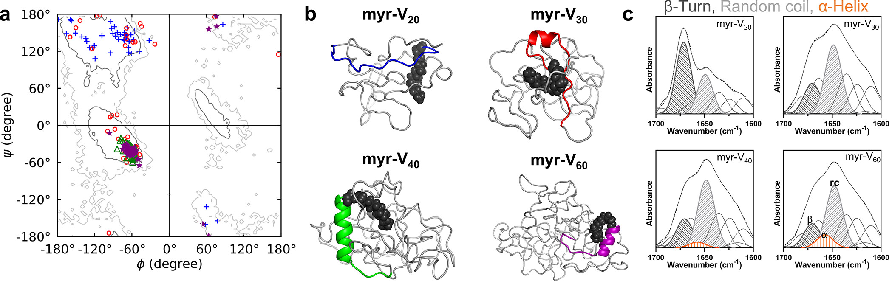
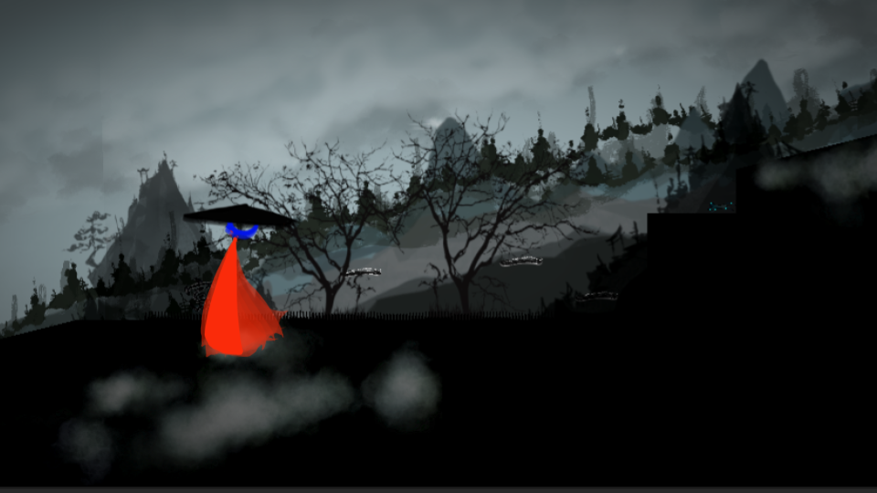

Mae Zeng Martel
Nice to meet you! I'm Mae.
I have recently accepted a position as a Computer Engineer at Northrop Grumman, and I am not currently looking for employment opportunities.
I obtained my Masters of Science in Engineering Management, as well as my Bachelor of Science degree in Computer Engineering from WashU. Prior to WashU, I completed my Bachelor of Arts degree in
Physics, with a Computer Science minor from Colgate University.
Military Service
I am a 2LT in the U.S. Army Reserve, in the Military Police Branch.
Publications
Games
-

Indie Game
Involvement
Employment
- McKelvey Assistant Instructor, ESE 326: Probability and Statistics for Engineers, 2023-2024
- Crow Observatory Staff, Washington University in St. Louis, 2021-2024
- Cyber Intern, Immersive Cyber Education at WPAFB, 2023
- EUSS Tutor, CSE 247: Data Structures and Algorithms, Washington University in St. Louis, 2022
- Ho Tung Visualization Laboratory, Colgate University, 2018-2021
- Syracuse Biomaterials Institute, Research Assistant, Syracuse University, 2021
- Colgate Information Security, Software Intern, Colgate University, 2020
- Intern Angels, Software Engineer Intern, Remote, 2020
Volunteering
- Graduate Student Affairs Advisory Board, Board Member, Washington University in St. Louis, 2023
- Society of Women Engineers, Director of Personal Development, Washington University in St. Louis, 2023
- Women in Engineering Leadship Society, Student Advisory Committee, Washington University in St. Louis, 2023
- Youth Engineering Initiative, Inc., 501c(3) Founder and CEO, 2015-2019
Recognition
-
[2023] Daughters of Union Veterans of the Civil War Award , AFCEA Educational Foundation
[2023] Dean's List Award , U.S. Department of the Army
[2021-2023] ROTC Honors Award , U.S. Department of the Army
[2021-2022] Cadet Scholar Award , U.S. Department of the Army
[2018-2023] Benton Scholar , Colgate University
[2018-2021] Dean's Award with Distinction for Academic Excellence , Colgate University
[2021] Class of 1951 Memorial Endowed Scholarship , Colgate University
[2018] Daughters of the American Revolution , National Society DAR
[2018] O'Brien & Gere Award for Academics in Engineering, CNY Young and Amazing
[2017] STEM Outreach Individual of the Year, Technology Alliance of CNY
[2017] Engineering Pipeline Award, National Grid
[2017] National Security Language Initiative for Youth (NSLI-Y) Scholarship , U.S. Department of State
Hobbies
I enjoy
Hip Hop Dancing ,
Chinese Ethnic Dancing , and
Digital Art.
Thank you for stopping by!